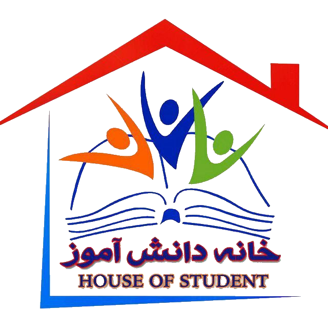

تست هالند
پرسش نامه حاضر به منظور ارزیابی رغبت شما در زمینه تحصیلی تهیه شده است و
به هیچ وجه پیشرفت یا هوش را نمی سنجد. در این پرسش نامه، فهرستی از
فعالیت ها، تجربه ها، مشاغل و خودسنجی ها آورده شده است تا رغبت ها و
تجربه های شما را مشخص نماید. در هر بخش توضیحات لازم برای پاسخ گویی داده
شده است. لطفاً این توضیحات را با دقت بخوانید پاسخ موردنظر را در برگه
پاسخ نامه وارد کنید. سعی کنید با دقت و آرامش، پرسش نامه را تکمیل کنید.
نام :
نام خانوادگی :